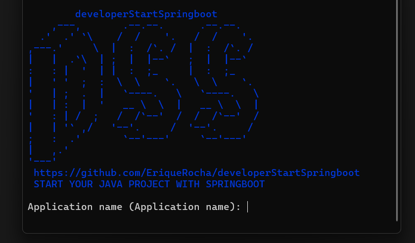

Skip the tedious boilerplate. Generate a clean Spring Boot API skeleton in seconds.
developerStartSpringboot is a terminal application designed for developers starting a Spring Boot API who want to bypass the tedious initial steps of creating layers, folders, and authentication.

dss initAnswer a few questions and get a ready-to-go project structure.
curl -fsSL https://eriquerocha.github.io/developerStartSpringboot/install-deb.sh | sudo bash1) Download the .deb package
wget https://github.com/EriqueRocha/developerStartSpringboot/releases/download/Ubuntu-linux/developerstartspringboot_0.1.0-1_amd64.debOr
curl -L -O https://github.com/EriqueRocha/developerStartSpringboot/releases/download/Ubuntu-linux/developerstartspringboot_0.1.0-1_amd64.deb2) Install (from the download directory)
sudo dpkg -i developerstartspringboot_0.1.0-1_amd64.deb3) Start using
dss initsudo dnf install https://github.com/EriqueRocha/developerStartSpringboot/releases/download/Fedora-linux/developerStartSpringboot-0.1.0-1.x86_64.rpm1) Download the .rpm package
wget https://github.com/EriqueRocha/developerStartSpringboot/releases/download/Fedora-linux/developerStartSpringboot-0.1.0-1.x86_64.rpmOr
curl -L -O https://github.com/EriqueRocha/developerStartSpringboot/releases/download/Fedora-linux/developerStartSpringboot-0.1.0-1.x86_64.rpm2) Install (from the download directory)
sudo dnf install ./developerStartSpringboot-0.1.0-1.x86_64.rpm3) Start using
dss init